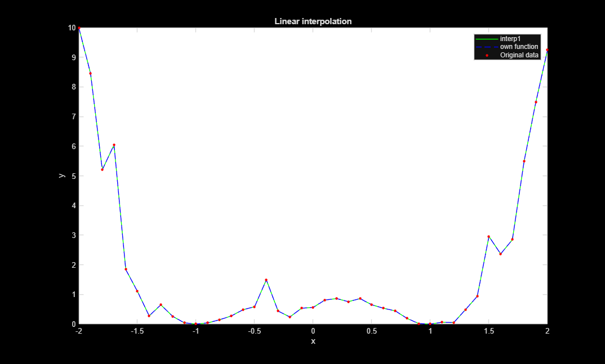
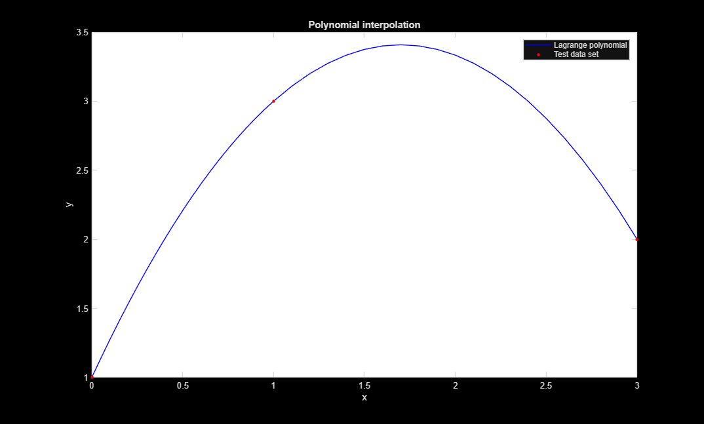
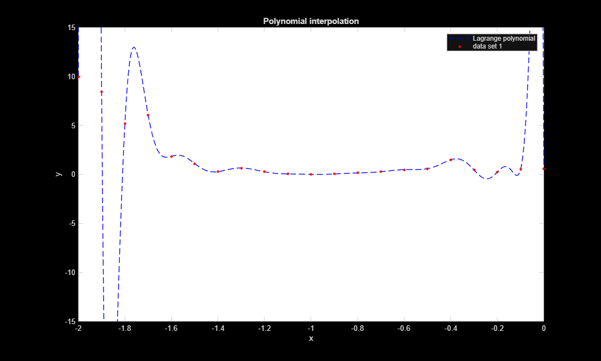
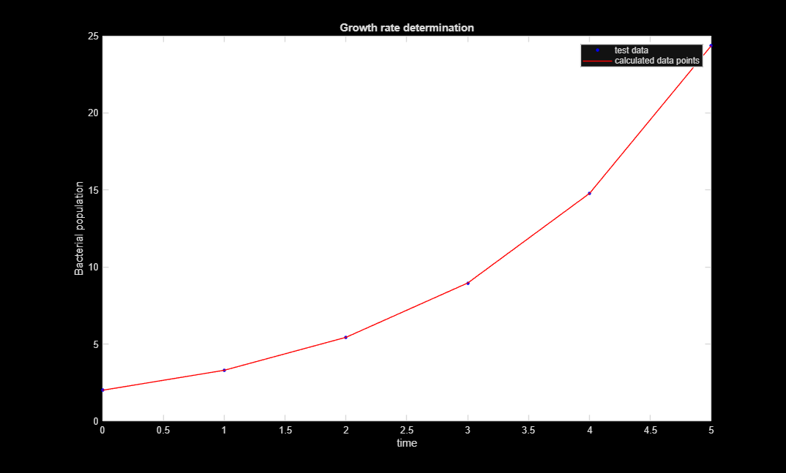
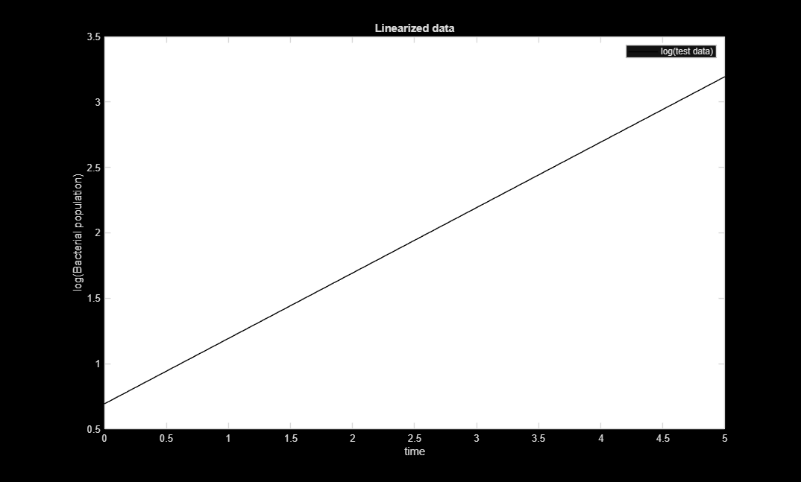
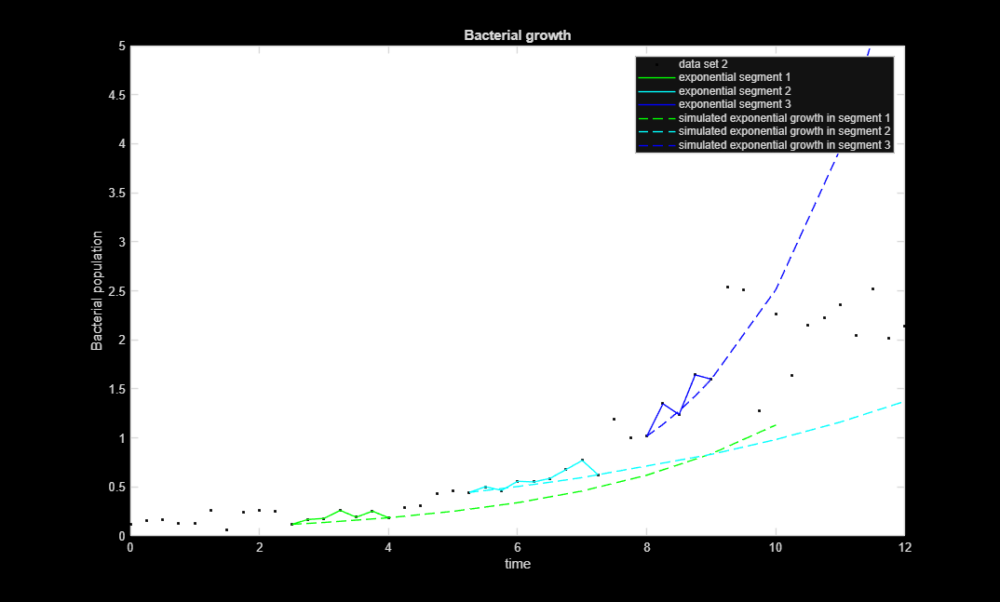
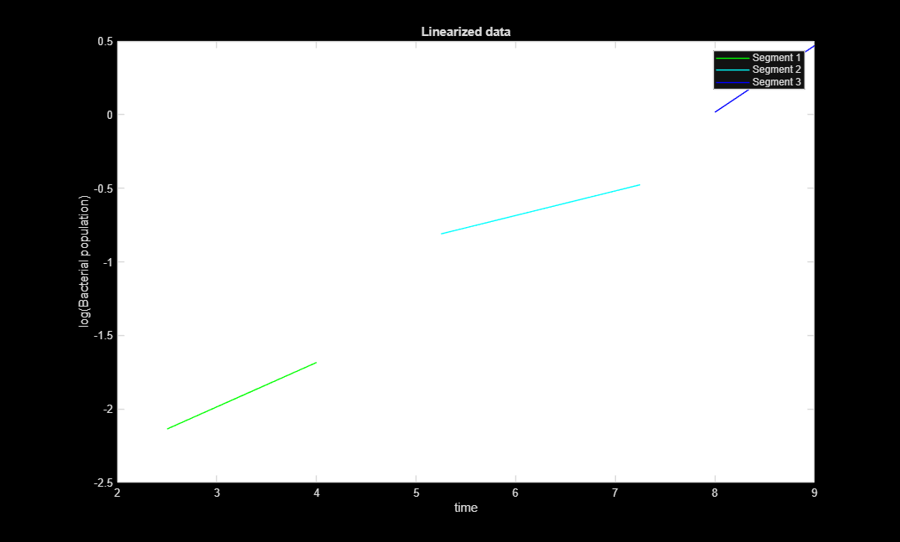
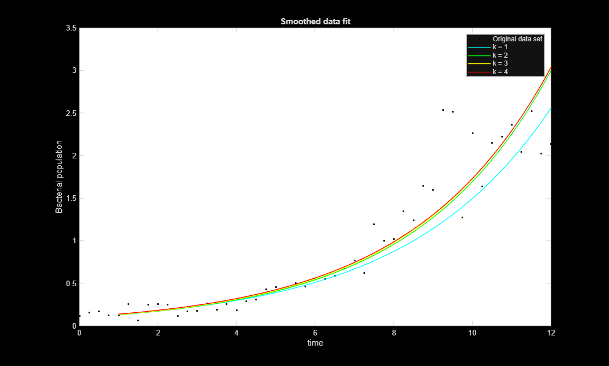
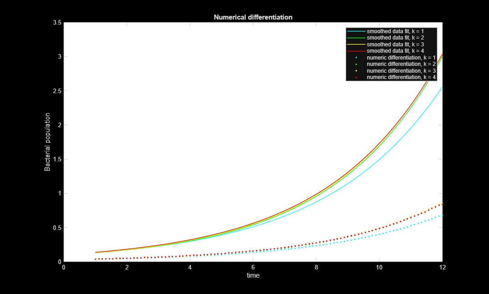

Contents
Task 1.1.
clear all
close all
clc
load('data_set_1.mat');
stepsize1_1 = 10;
[x_olinint, y_olinint] = linearInterpolation(x,y, stepsize1_1);
x_mlinint = linspace(x(1),x(end), length(x)*stepsize1_1);
y_mlinint = interp1(x,y,x_mlinint);
figure(1)
plot(x_mlinint, y_mlinint, '-g', x_olinint, y_olinint, '--b', x,y, '.r', 'MarkerSize', 10)
set(gca, 'color', 'w')
title('Linear interpolation')
legend('interp1', 'own function', 'Original data')
xlabel('x')
ylabel('y')

Task 1.2.
tx = [0 1 3];
ty = [1 3 2];
stepsize1_2 = 20;
[x_tpolint, y_tpolint] = polynomialInterpolation(tx, ty, stepsize1_2);
figure(2)
plot(x_tpolint, y_tpolint, '-b', tx, ty, '.r', 'MarkerSize', 10)
set(gca, 'color', 'w')
title('Polynomial interpolation')
legend('Lagrange polynomial', 'Test data set')
xlabel('x')
ylabel('y')
xpol = x(1:1:21);
ypol = y(1:1:21);
[x_opolint, y_opolint] = polynomialInterpolation(xpol, ypol, stepsize1_2);
figure(3)
plot(x_opolint, y_opolint, '--b', xpol, ypol, '.r', 'MarkerSize', 10)
set(gca, 'color', 'w')
title('Polynomial interpolation')
legend('Lagrange polynomial', 'data set 1')
xlim([-2 0])
ylim([-15 15])
xlabel('x')
ylabel('y')
 
Task 2.1.
tt = [0 1 2 3 4 5];
tx = [2];
for i = 2:1:length(tt)
tx(i) = tx(1)*exp(0.5 * tt(i));
end
sprintf('X(t) = X_0 * e(μ*t) \n \nln(X(t)) = ln(X_0) + μt')
[mu, cx0, ln_x] = mu_determination(tt,tx);
ecx1 = [cx0];
for i = 2:1:length(tt)
ecx1(i) = cx0 * exp(mu * tt(i));
end
figure(4)
plot(tt, tx, '.b', tt, ecx1, '-r', 'MarkerSize', 10)
set(gca, 'color', 'w')
title('Growth rate determination')
legend('test data', 'calculated data points')
xlabel('time')
ylabel('Bacterial population')
figure(5)
plot(tt, ln_x, '-k')
set(gca, 'color', 'w')
title('Linearized data')
legend('log(test data)')
xlabel('time')
ylabel('log(Bacterial population)')
ans =
'X(t) = X_0 * e(μ*t)
ln(X(t)) = ln(X_0) + μt'
 
Task 2.2
load('data_set_2.mat');
window = 5;
precision = 0.33;
allowed_outliers = 2;
[et, ex] = exponential_selector(time, bio_r, window, precision, allowed_outliers);
[emu1, ecx0_1, eln_x1] = mu_determination(et{1},ex{1});
[emu2, ecx0_2, eln_x2] = mu_determination(et{2},ex{2});
[emu3, ecx0_3, eln_x3] = mu_determination(et{3},ex{3});
peln_x1 = [eln_x1(1) eln_x1(end)];
pet1 = [et{1}(1) et{1}(end)];
peln_x2 = [eln_x2(1) eln_x2(end)];
pet2 = [et{2}(1) et{2}(end)];
peln_x3 = [eln_x3(1) eln_x3(end)];
pet3 = [et{3}(1) et{3}(end)];
ecx1 = [ecx0_1];
et1 = et{1};
for i = 2:1:12
if i < length(et1)
ecx1(i) = ecx0_1 * exp(emu1 * (et1(i) - et1(1)));
else
i = round(et1()) + 1;
et1(i) = i;
ecx1(i) = ecx0_1 * exp(emu1 * (et1(i) - et1(1)));
end
end
ecx2 = [ecx0_2];
et2 = et{2};
for i = 2:1:12
if i < length(et2)
ecx2(i) = ecx0_2 * exp(emu2 * (et2(i) - et2(1)));
else
et2(i) = i;
ecx2(i) = ecx0_2 * exp(emu2 * (et2(i) - et2(1)));
end
end
ecx3 = [ecx0_3];
et3 = et{3};
for i = 2:1:12
if i < length(et3)
ecx3(i) = ecx0_3 * exp(emu3 * (et3(i) - et3(1)));
else
j = i + 4;
et3(i) = j;
ecx3(i) = ecx0_3 * exp(emu3 * (et3(i) - et3(1)));
if j == 12
break
end
end
end
figure(6)
plot(time, bio_r, '.k', et{1}, ex{1}, '-g', et{2}, ex{2}, '-c', et{3}, ex{3}, '-b', ...
et1, ecx1, '--g', et2, ecx2, '--c',et3, ecx3, '--b')
set(gca, 'color', 'w')
title('Bacterial growth')
ylim([0 5])
legend('data set 2', 'exponential segment 1', 'exponential segment 2', 'exponential segment 3', ...
'simulated exponential growth in segment 1', 'simulated exponential growth in segment 2', 'simulated exponential growth in segment 3')
xlabel('time')
ylabel('Bacterial population')
figure(7)
plot(pet1, peln_x1, '-g', pet2, peln_x2, '-c', pet3, peln_x3, '-b')
set(gca, 'color', 'w')
title('Linearized data')
legend('Segment 1', 'Segment 2', 'Segment 3')
xlabel('time')
ylabel('log(Bacterial population)')
 
Task 3.1.
for k = 1:1:4
[Ts(k,:), Xs(k,:)] = smoother(time, bio_r, k);
end
figure(8)
plot(time, bio_r, '.k', Ts(1,:), Xs(1,:), '-c', Ts(2,:), Xs(2,:), '-g', ...
Ts(3,:), Xs(3,:), '-y', Ts(4,:), Xs(4,:), '-r')
set(gca, 'color', 'w')
title('Smoothed data fit')
legend('Original data set', 'k = 1', 'k = 2', 'k = 3', 'k = 4')
xlabel('time')
ylabel('Bacterial population')

Task 3.2.
for k = 1:1:4
fbar_y(k,:) = differentiator(Ts(k,:), Xs(k,:));
end
figure(9)
plot(Ts(1,:), Xs(1,:), '-c', Ts(2,:), Xs(2,:), '-g', Ts(3,:), Xs(3,:), '-y', Ts(4,:), Xs(4,:), '-r', ...
Ts(1,:), fbar_y(1,:), '.c', Ts(2,:), fbar_y(2,:), '.g', Ts(3,:), fbar_y(3,:), '.y', Ts(4,:), fbar_y(4,:), '.r')
set(gca, 'color', 'w')
title('Numerical differentiation')
legend('smoothed data fit, k = 1', 'smoothed data fit, k = 2', 'smoothed data fit, k = 3', 'smoothed data fit, k = 4', ...
'numeric differentiation, k = 1', 'numeric differentiation, k = 2', 'numeric differentiation, k = 3', 'numeric differentiation, k = 4')
xlabel('time')
ylabel('Bacterial population')
